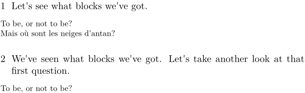

Syntax (autogenerated)
| \defineblock[...][...][...=...,...] | |
| [...] | name |
| [...] | name |
| ...=...,... | inherits from \setupblock |
Syntax
| \defineblock[...] | |
| [...] | name of block type |
Description
Blocks are reusable pieces of text. Once a block type is defined with \defineblock[name], the blocks can be defined (with or without displaying them) using \beginname[tags] ... \endname. (Yes, that is \begin... and \end..., not \start... and \stop....) There are a number of commands to display all or some of the blocks defined in the document; see the See Also section for a list with descriptions.
Example
-
\defineblock[question] \hideblocks[question] % We don't want to print blocks where we define them \beginquestion[first] To be, or not to be? \endquestion \section{Let's see what blocks we've got.} \useblocks[question] \section{We've seen what blocks we've got. Let's take another look at that first question.} \useblocks[question][first] \beginquestion[last] Mais o\`u sont les neiges d'antan? \endquestion
This gives:
- 
See also
- \defineblock to define a new kind of block.
- \setupblock to set up block style.
- \keepblocks to start displaying blocks where they are defined.
- \hideblocks to stop displaying blocks where they are defined.
- \useblocks to display blocks.
- \selectblocks to display only blocks mentioned in the current section.
- \processblocks to process blocks without printing them.
- \forceblocks
- \nomoreblocks to allow one-pass compilation under certain conditions.
Help from ConTeXt-Mailinglist/Forum
All issues with: